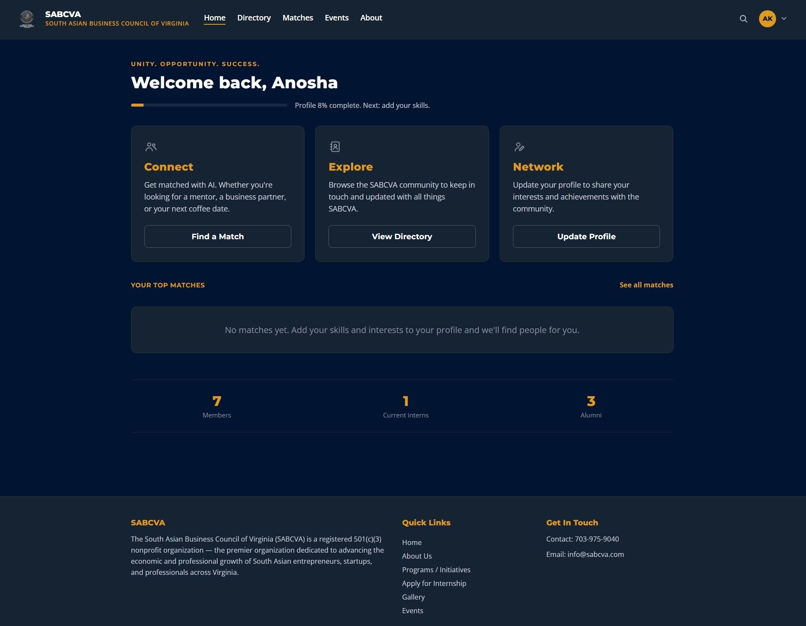

SABCVA Alumni & Intern Connection Platform
An AI-powered community platform that helps interns and alumni discover relevant connections and stay engaged beyond the program.
Team project · 3rd Place — Best Project


Overview
Our team designed and built an AI-powered Alumni & Intern Connection Platform for the South Asian Business Council of Virginia. The project received 3rd Place — Best Project in the SABCVA AI & Cybersecurity Internship Program.
The challenge
For nonprofit and community organizations, meaningful relationships can fade after an internship ends. We set out to help SABCVA maintain an active network where alumni and interns can find people with relevant skills, experience, and interests.
What our team built
- Professional profiles: members can share their skills, interests, experience, and career fields.
- A searchable community: a directory helps users discover relevant people.
- AI Smart Matching: recommendations consider career fields, skills, interests, and experience.
- Explainable recommendations: contextual explanations help users understand why a connection may be relevant.
- AI-generated summaries: profile and match summaries make recommendations easier to read.
- Supporting architecture: structured data and backend services support the web experience.
Responsible AI & product design
Our work considered security, privacy, ethics, and responsible AI throughout development. We focused on making recommendations understandable and useful while creating a straightforward experience for community members.
Collaboration & outcome
I worked as part of the team through a summer of design, development, testing, and iteration. Together, we brought the platform from an idea to a working product and final presentation, earning third-place recognition.
My teammates were Lily DeBell, Darling Paumen, Zainab Ozair, Eisha Basit, and Zeba Lodhi. Sadiq Ahmed provided mentorship, with support from Mansoor Qureshi and the SABCVA leadership team.